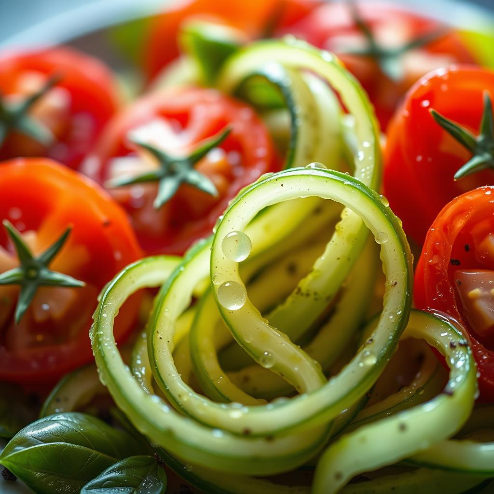
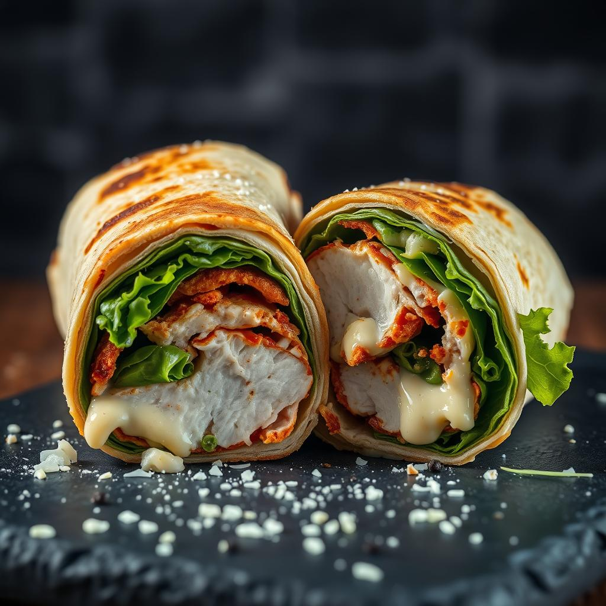
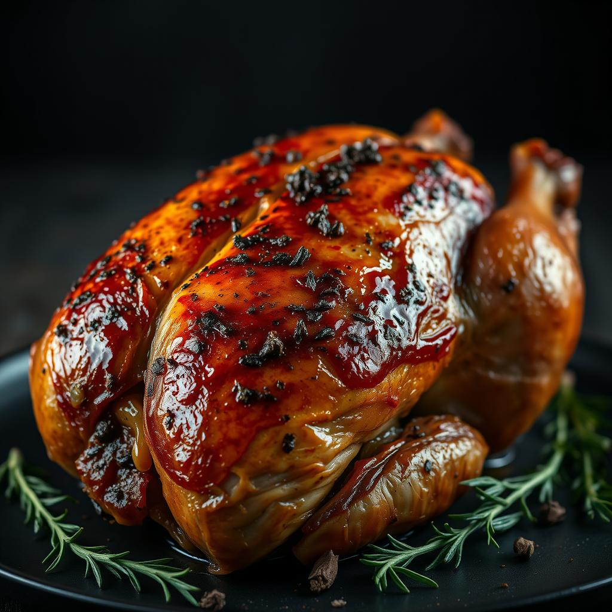
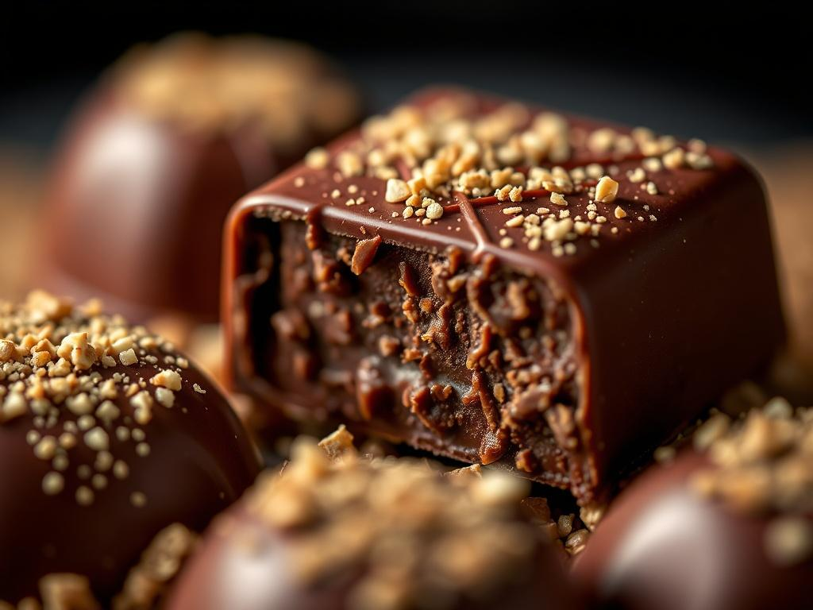
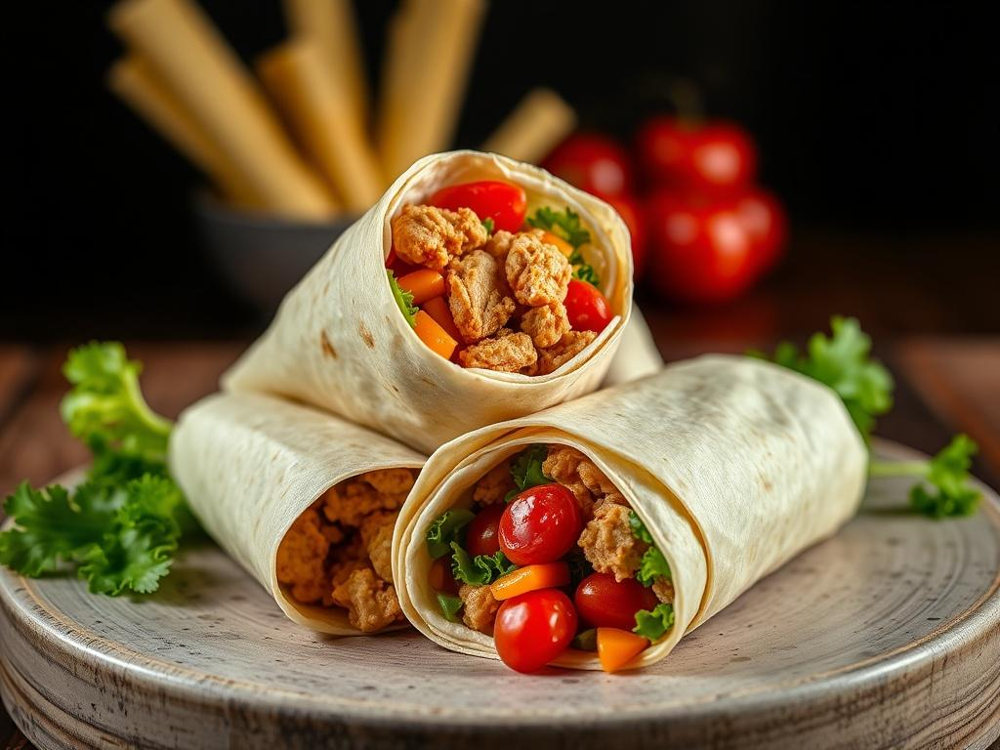

Healthy Summer Salad Recipes: The Secret Dressing Everyone Wants
Searching for the ultimate easy tomato cucumber salad? This refreshing Mediterranean side dish is the perfect crisp, cool addition to any dinner. Packed with garden-fresh flavors and a zesty vinaigrette, it's the healthy summer salad recipe you'll be making on repeat all season long. Quick, vibrant, and incredibly delicious! #TomatoCucumberSalad #HealthyEating #SummerRecipes #EasySideDish #CleanEating #TomatoCucumberSalad #HealthySummerSalad #MediterraneanDiet #EasyRecipes #FreshFood
READ FULL RECIPE
Healthy Summer Salad Recipes: The Secret Dressing That Changes Everything
Looking for the ultimate Healthy Summer Salad Recipes? This Fresh Tomato Cucumber Salad is the perfect Easy Mediterranean Side Dish for your next cookout. Learn the simple vinaigrette secret that makes these garden veggies pop. Crisp, refreshing, and naturally gluten-free! Save this for your next BBQ. #summersalad #healthyeating #mediterraneanfood #saladrecipe #freshveggies #HealthySummerSalad #MediterraneanDiet #EasyRecipes #FoodPhotography #FreshEats
READ FULL RECIPE
Rotel Dip Recipe: The Secret Ingredient That Makes It Creamier
Looking for the ultimate easy party appetizers? This 5-minute Rotel dip recipe is the only game day food idea you need. It’s irresistibly cheesy, perfectly spicy, and disappears in seconds. Click to see the secret ingredient for the perfect texture! #RotelDip #EasyAppetizers #GameDayEats #PartyFood #DipRecipe #RotelDip #EasyAppetizers #GameDayEats #PartyFood #DipRecipe #ComfortFood #PinterestFood
READ FULL RECIPE
Easy Party Appetizers: The Secret Ingredient for the Creamiest Rotel Dip
Master the art of easy party appetizers with this crowd-pleasing Rotel dip with ground beef. This slow cooker dip recipe is the ultimate game-day hack, featuring a rich, velvety cheese blend and savory spice that disappears in minutes. Perfect for hosting or holiday snacking! Get the full recipe and pro tips for the smoothest melt every single time. #roteldip #easyrecipes #partyfood #appetizerideas #diprecipe #slowcookerrecipes #comfortfood
READ FULL RECIPE
Easy Party Appetizers: The Only Rotel Dip Recipe You'll Ever Need
Looking for the ultimate crowd-pleasing snack? This creamy Rotel dip with sausage is the gold standard of slow cooker dip recipes. Perfectly cheesy, slightly spicy, and ready in minutes. Get the secret to the smoothest, most addictive texture for your next game day or holiday party. #RotelDip #EasyAppetizers #PartyFood #DipRecipe #GameDayEats #RotelDip #EasyAppetizers #SlowCookerRecipes #GameDayFood #PartyDip
READ FULL RECIPE
Chicken Caesar Wrap: The 10-Minute Lunch That Actually Tastes Gourmet
Looking for easy lunch ideas? This chicken caesar wrap is the ultimate meal prep recipe for busy weeks. Crispy seasoned chicken, crunchy romaine, and a creamy homemade dressing make this the perfect healthy grab-and-go meal. Elevate your lunch game with these simple, flavorful steps. #easyrecipes #chickenwrap #mealprep #lunchideas #caesarsalad ['#easyrecipes', '#chickenwrap', '#mealprep', '#lunchideas', '#caesarsalad', '#healthyrecipes', '#foodphotography']
READ FULL RECIPE
Easy Roasted Chicken Recipe: The Secret to Restaurant-Quality Crispy Skin Every Time
Master the art of an easy roasted chicken recipe that delivers perfectly crispy skin and succulent, herb-infused meat. This herb butter roasted chicken is the ultimate crowd-pleasing dinner. Learn how to achieve golden, caramelized edges in your own oven. Perfect for Sunday meal prep or holiday dinners. #roastedchicken #easyrecipes #dinnerideas #chickenrecipe #foodphotography #roastedchicken #easyrecipes #dinnerideas #crispychicken #foodie #mealprep
READ FULL RECIPE
Easy Roasted Chicken Recipe: The Secret to Perfect Crispy Skin
Master the art of the perfect herbed oven roasted chicken with this foolproof guide. Learn how to achieve golden, crispy skin roast chicken every single time with juicy, flavorful meat. This easy roasted chicken recipe is the ultimate weeknight dinner that tastes like a gourmet meal. Perfect for Sunday family dinners! #roastchicken #easydinner #foodphotography #recipeideas #roastchicken #easydinner #foodphotography #recipeideas #comfortfood #healthyrecipes
READ FULL RECIPE
Easy Lunch Meal Prep: The Ultimate 10-Minute Chicken Caesar Wrap You Won't Believe is Healthy!
Master the art of the perfect healthy chicken caesar wrap! This game-changing recipe is the ultimate easy lunch meal prep for busy weeks. Crispy romaine, golden grilled chicken, and a creamy homemade dressing make these quick dinner ideas a total crowd-pleaser. Learn the secret to the perfect wrap fold for an irresistible meal. #chickencaesarwrap #easylunch #mealprepideas #healthyrecipes #quickdinner #chickencaesarwrap #easylunch #mealprepideas #healthyrecipes #quickdinner
READ FULL RECIPE
Easy Lunch Recipes: The 10-Minute Chicken Caesar Wrap You'll Crave Daily
Master the art of the perfect healthy chicken wrap! This recipe transforms basic ingredients into a gourmet 15 minute meal. Featuring crunchy romaine, juicy seasoned chicken, and a secret creamy dressing. Perfect for meal prep or a quick lunch! #chickenceasarwrap #easylunchrecipes #healthyrecipes #quickmeals #mealprepideas ['#chickenceasarwrap', '#easylunchrecipes', '#healthyrecipes', '#15minutemeals', '#lunchideas', '#foodphotography']
READ FULL RECIPE
Easy Summer Desserts: 10 Recipes That Don't Require Your Oven
Beat the heat with these refreshing dessert ideas that are perfect for your next backyard party. From no-bake fruit recipes to chilled delights, these easy summer desserts are guaranteed to impress. Discover the ultimate guide to seasonal sweets that stay cool when the temperature climbs! #summerdesserts #nobakerecipes #easydesserts #foodphotography #summerrecipes #summerdesserts #nobakerecipes #refreshingdesserts #easyrecipes #foodphotography #summerfood #dessertgoals
READ FULL RECIPE